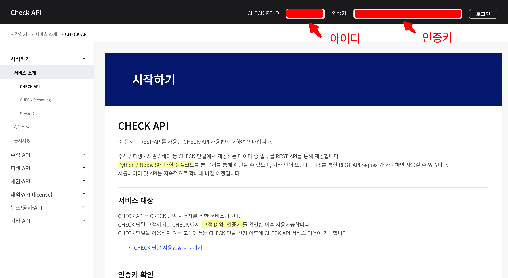
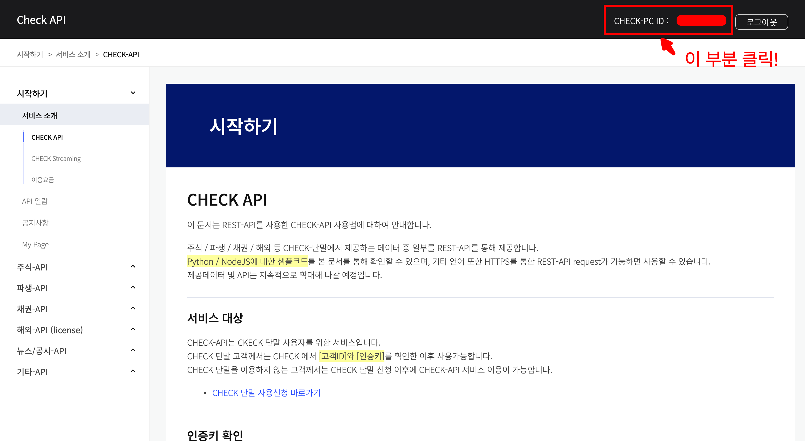
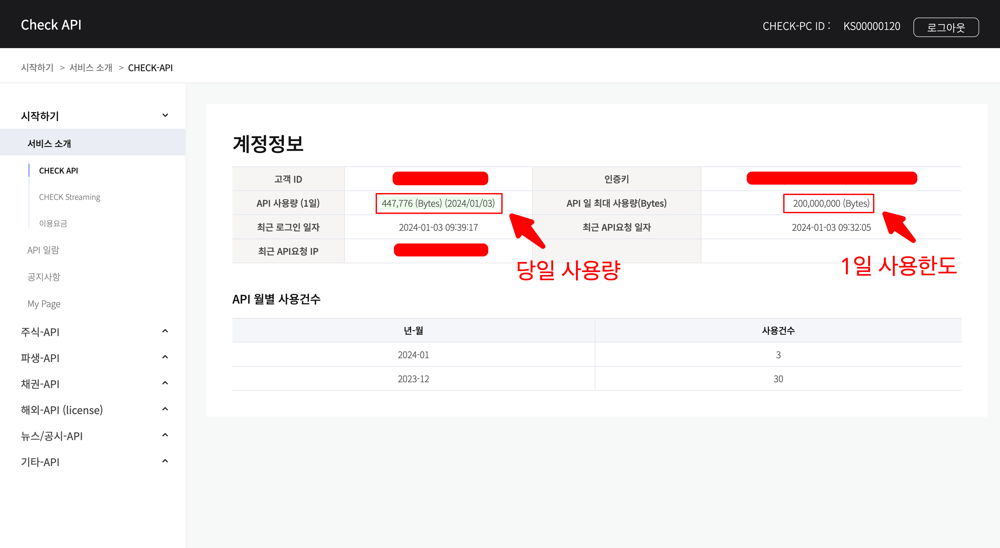

CHECK-API 사용량 확인 방법
CHECK-API 사용법
CHECK-API 사용량 확인 방법
본 글에서는 CHECK-API의 사용량을 확인하는 방법을 설명합니다.
CHECK-API 사용량 제한
CHECK-API는 사용 요금제에 따라 사용량을 제한하고 있습니다. 각 요금제에 따른 사용량 제한은 다음과 같습니다.
| 분류 | LEVEL | 일간 API 사용량 |
|---|---|---|
| CHECK 사용자 | BASIC | 0.2 GB / 일 |
| - | PLUS | 0.5 GB / 일 |
| CHECK 미사용자 | Lv.1 | 1.0 GB / 일 |
| - | Lv.2 | 5.0 GB / 일 |
| - | Lv.3 | 10.0 GB / 일 |
사용량을 초과하여 사용하는 경우 별도의 공지 없이 사용이 제한될 수도 있으므로 사용에 유의해 주시기 바랍니다.
CHECK-API 사용량 확인 방법
CHECK-API 사용량은 CHECK-API 공식 홈페이지에서 로그인하여 확인할 수 있습니다.
- 홈페이지에 ID와 인증키(API-KEY) 값을 입력하여 로그인합니다.

- 로그인 후 나타나는 우측 상단의 아이디 부분을 클릭합니다.

- 1일 사용한도 및 현재 당일 사용량 등의 사용 정보가 표시됩니다.
